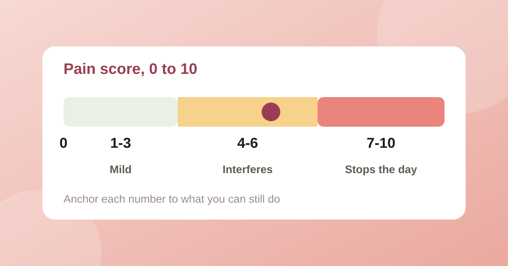

What to track in an endometriosis symptom diary (and what to bring to your appointment)
Appointments are short and memory is unreliable when you are in pain. A good symptom diary fixes both, if it records the right things.
Read article
Rate endometriosis pain from 0 (no pain) to 10 (the worst pain you can imagine), and anchor each number to what you can still do: 1 to 3 is noticeable but manageable, 4 to 6 interferes with your day, 7 to 10 stops normal activity. This is the numeric rating scale doctors and pain clinics use. It only works if a 6 this month means the same as a 6 last month, so the aim is consistency, not a perfect number.
This article is general information, not medical advice. A pain diary helps you describe what you experience; it cannot diagnose anything. Talk to your doctor about your symptoms and what to do about them.
| Score | Band | What it usually looks like |
|---|---|---|
| 0 | None | No pain |
| 1 to 3 | Mild | You notice it, but you can work, talk and sleep as normal |
| 4 to 6 | Moderate | It interferes: you are distracted, slower, may need painkillers or a heat pad |
| 7 to 8 | Severe | You cannot concentrate, may need to lie down, miss work or cancel plans |
| 9 to 10 | Worst | Unbearable, you cannot function and may need emergency care |
Write your own anchors down once, for example "6 = I have to leave the room in meetings", and reuse them. A personal anchor beats a vague feeling, especially on days when pain makes everything look bad.
Endometriosis pain is not one thing. Doctors usually ask about several, and each can follow its own pattern:
Scoring each of these from 0 to 10, even once a week, shows which ones dominate and when. It also covers the questions you are most likely to be asked. For the full list of things to log, see what to track in an endometriosis symptom diary.
A number says how much, not what kind. Add three short details and the entry becomes useful to a clinician:
A month of daily scores becomes a few lines a doctor can act on: how many days had pain, how many were 7 or higher, the day of the cycle when the worst pain fell, and what happened after a change in treatment. The trend matters more than any single number, so offer the summary at the start and add your questions. Bring it printed or on your phone.
Sudden, severe pain that is new for you, pain with fainting, fever or vomiting, or very heavy bleeding needs urgent medical attention. Do not wait to log it first.
Endly is a private endometriosis and adenomyosis symptom tracker. It lets you log a 0 to 10 pain score in about ten seconds, mark where it hurts on a body map, rate the five endometriosis pains and turn the entries into a PDF for your doctor. There is no account, no ads and no analytics, and your entries stay on your phone. More guides are in our health and symptom tracking section.
Use 0 for no pain and 10 for the worst pain you can imagine. Then anchor the numbers to what you can do: 1 to 3 is noticeable but you carry on, 4 to 6 interferes with your day, 7 to 10 stops normal activity. Record the worst pain of the day, and stick to the same meaning every time.
On a 0 to 10 scale, 7 and above is usually called severe: you cannot work or concentrate, and may need to lie down, take rescue medication or seek urgent care. Sudden severe pain, fainting or heavy bleeding needs urgent medical attention.
Record the worst pain of the day as your main number, because it is quick and consistent. If you have the energy, add an average for the day as well. Whichever you choose, use the same one every day.
Pain is personal, and the scale has no fixed units. Doctors look at your trend and what the pain stops you doing, not the absolute number. A steady 6 that keeps you off work for days is more informative than a single 9.
Appointments are short and memory is unreliable when you are in pain. A good symptom diary fixes both, if it records the right things.
Read articleA 7.4 kW home charger draws 32 A for hours. For a short run clipped to a wall that means 4 mm² copper; in an insulated wall or over 30 m it means 10 mm² or more.
Read articleTabata is 20 seconds on, 10 off, eight times: four minutes in all. Other HIIT formats use longer work blocks and equal or longer rest.
Read articlePublished: . More in Health & symptom tracking or all articles.